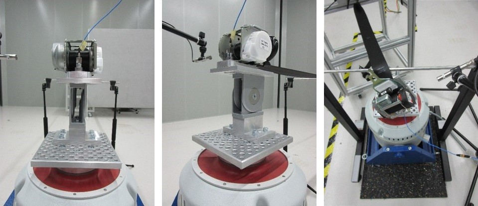
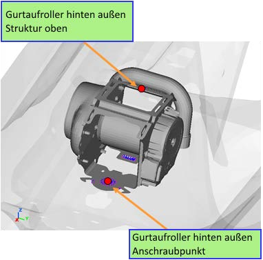

V25_BT-LAH Final_Basismodul-TE-V25_Mai[redacted-ext].docx
[redacted]for [redacted-person] NVH
Development, [redacted-person] Specification: LAH.DUM.857.BL
|
|
|---|---|
|
[redacted-person] |
|
[redacted-person] |
|
[redacted-person] |
| [redacted-person] |
|
|
|---|---|
|
[redacted-person] |
|
|
|
|---|
|
|
|
|
|
|
|
|
Approval
[I: BT-LAH[redacted-ext]]
|
|
|
|---|---|---|
|
||
|
|
|
|
|
|
|
|
|
|
|
|
|
|
|
|
|
|
|
|
Revision record
[I: BT-LAH-941]
|
|
|
|---|---|---|
| [redacted-person] |
|
|
| [redacted-person] |
|
|
| [redacted-person] |
|
|
| [redacted-person] |
|
[redacted-person] |
| [redacted-person] |
|
[redacted-person] |
| [redacted-person] |
|
[redacted-person] |
Contents
[redacted-person] Specification (LAH) describes requirements for components and simulation models related to vehicle safety. It describes the performance specifications, requirements, and test conditions the contractor and the product that is to be developed must fulfill.
[redacted-person] Specification is the basis of the services that the contractor must perform. The quotation release procedure must be followed.
[A: BT-LAH-5]
This LAH and [redacted-co]99000 including parts 1 to 4 define the basic scope of the contractor's performance obligations.
[A: BT-LAH-6]
This LAH describes the performance specifications, requirements, and test conditions that the contractor and the product to be developed must fulfill.
The frequency response must be used to identify retractor and body connection point mode shapes that are critical to operation or acoustically inadequate. The frequency response is characterized with an excitation of 1 N in all spatial directions. The forces are applied at the top of the retractor housing as far away from the screw-on point as possible. The retractor is rigidly mounted. The numerical simulation must be run for a frequency band of 10 to 200 Hz. Targeted changes to the system characteristics, such as the damping capacity of the materials or additional stiffening elements, must be used in order to alter the natural vibrations in such a way that critical frequency ranges will be avoided or moved through with significantly reduced amplitudes.
For noise, vibration, and harshness (NVH) examinations in the body assembly (ASSY), simplified retractor detail models must be provided for every single retractor model quoted.
Figure 2.1 Examples of simplified retractor detail models
|
|
|---|---|
|
|
The models must be constructed as follows:
Format: NASTRAN (models must executable in NASTRAN)
Element edge length equal to or greater than 3 mm
The component stiffnesses and mass distributions match the actual real-life parts.
The mass comparison (between the actual real-life component and the simulation model) must be documented.
The position of the rotary shaft and the mass distribution of the webbing must be faithfully reproduced.
Remaining belt winding length of 1 800 mm (as in an unoccupied seat).
If there are dimples, the translational degrees of freedom (DOF: 123) must be locked in place at the dimple bearing surface.
The model must be validated as per section 3 "Testing and noise measurement validation."
A shaker with a first natural frequency that does not interfere with the excitation spectrum must be used.
The shaker must be validated with rigid retractor equivalent masses and retractor holders. The lightest and heaviest retractor masses must be tested. The retractor equivalent masses must be screwed onto the holder as per the as-installed position. In further tests, the retractor holder always remains secured at the exact same points.
The shaker must be operated in an anechoic or semi-anechoic measuring chamber or encapsulated accordingly in order to prevent the measurement from being disrupted.
At least two triaxial acceleration sensors must be secured:
On the retractor tightening screw on the holder.
Directly on the shaker plate.
The excitation signals described in section 3.2 must be used.
The required validation quality as per section 5.2 must be achieved. The remaining winding lengths must also be approximated with equivalent masses.
The shaker setup being used must meet the following general conditions:
The root-mean-square (RMS) value of the power spectral density (PSD) of the Z-axis acceleration must not deviate from the desired value by more than 5% (evaluation range: 15 to 100 Hz; sampling rate: 1 kHz). With the exception of a 4th-order Butterworth low-pass filter with a cutoff frequency of 500 Hz, no filters must be used. General PSD parameters: Hanning window with 4 096 samples; sampling rate of
1 kHz; 90% overlap; RMS amplitude scaling.
It is impermissible for the acceleration in the transverse direction to exceed the RMS value of the power spectral density in the Z-axis direction by more than 10%. The deviation in the Z-axis direction must be determined relative to the resulting vector in the XY plane.
During non-operation, without a retractor, with the webbing drive switched on, the test bed setup must have a loudness < 1 sone.
The overall center of gravity (retractor and setup) is located on the shaker's Z-axis.
A holder that is as rigid as possible and that does not have any significant natural vibrations below double the excitation frequency must be used.
It must be technically possible to perform a measurement on the shaker table. For a measuring setup with a shaker table used to subject the component to a horizontal vibration test (defined for the Y-axis direction in this case), the setup must meet the following general conditions analogously to section 3.1:
The RMS value of the power spectral density of the Y-axis acceleration must not deviate from the desired value by more than 5% (evaluation range: 15 to 100 Hz; sampling rate: 1 kHz). With the exception of a 4th-order Butterworth low-pass filter with a cutoff frequency of 500 Hz, no filters must be used. General PSD parameters:
Hanning window with 4 096 samples; sampling rate of 1 kHz; 90% overlap; RMS amplitude scaling.
It is impermissible for the acceleration in the transverse direction to exceed the RMS value of the power spectral density in the Y-axis direction by more than 10%. The deviation in the Y-axis direction must be determined relative to the resulting vector in the XZ plane.
During non-operation, without a retractor, with the webbing drive switched on, the test bed setup must have a loudness < 1 sone.
A holder that is as rigid as possible and that does not have any significant natural vibrations below double the excitation frequency must be used.
It must be technically possible to perform a measurement on the shaker table.
The position of the retractor's first bending mode and torsional mode from the simulation and testing must be validated and documented before the first integration into a vehicle. To this end, a shaker measurement of the retractor must be carried out in the as-installed position on a rigid holder (Figure 3.1). It is recommended to use a holder with a natural frequency that is at least twice the maximum excitation frequency. The measurement must be performed with the following specifications:
Measurement without dimple (front vehicle position), the retractor bearing surface is a circular surface with a radius of 22.5 ±0.5 mm around the screw-on point; as per [redacted-person] Specification TL 82500.
Measurement on a rigid holder analogous to mounting in the vehicle (three-point support with dimple for rear vehicle position)
Alternatively, the following measurement is possible following consultation with the appropriate departments:
"Flat" measurement: Retractor resting across its entire surface horizontally, with preload (e.g., dimple). A ball-type sensor must be used for the horizontal position.
Measurement on a rigid holder analogous to mounting in the vehicle (three-point support with dimple for all vehicle positions)
Remaining belt winding length of 1 800 mm: as in an unoccupied seat
In order to clearly identify the source of noise, tests with retractor parts locked in place (e.g., ball-type sensor) must be conducted following consultation with the appropriate department.
Procedure as per TL 82500 or, alternatively, as per new specification – see section 7.1. Load cases following consultation with the appropriate department
Starting from a remaining winding length of 1 800 mm ±5 mm, the belt is retracted a length equivalent to a single belt coil revolution with a constant speed during the measuring duration of 60 s ±1 [redacted-person], the loudest wave position can be tested.
All test conditions and general conditions must be documented.
Deviations from TL 82500, e.g., regarding the general test conditions, must be discussed and agreed upon with the appropriate department.
The average value from 5 measured specimens of a retractor type must be calculated.
Four triaxial acceleration sensors must be secured as per TL 82500.
On the retractor tightening screw on the holder (position identical to that in section 3.1).
On the shaker plate (see section 3.1).
Two on the retractor housing; one of them as far away as possible from the screw position, the second on the sensor side at the sensor position.
The simplified retractor detail model must be validated with the fast Fourier transform (FFT) for the acceleration sensors on the retractor housing.
In addition to the retractor's accelerations, the sound pressure must be measured and documented.
To this end, a measuring microphone must be used at a distance of 100 mm ±5 mm. The microphone's front side must be aimed toward the sensor side. The microphone axis must be aligned with the retractor's winding axis. The sound pressure must be used to determine the loudness [sones], the weighted sound pressure level [dB(A)], and the level as a function of time.
The requirements in the [redacted-person] for the relevant vehicle apply.
The loudness must be analyzed with the following parameters:
4th-order Butterworth high-pass filter with a cutoff frequency fc = 500 Hz (infinite impulse response (IIR) filter).
Loudness as a function of time as per ISO 532 B filter method; free field; 6th-order Butterworth;
sampling rate of 20 480 Hz; time averaging = 2 ms.
(For higher sampling rates, a 4th-order low-pass filter with a cutoff frequency fc = 12 kHz must be used.)
Single-number values are calculated with the arithmetic mean of the loudness curve.

Figure 3.1 Example of a shaker mounting system for the retractor in a semi-free-field chamber
The required validation quality as per section 5 "Comparison between test and simulations" must be achieved.
In addition, the energy spectral density of the microphone measurement as a function of time must be determined. The following parameters must be used for this purpose (conforming to ISO 532B and DIN 45631/A1):
A 4th-order high-pass filter with a cutoff frequency of 1 500 Hz
A 2nd-order low-pass filter with a cutoff frequency of 6 000 Hz
Level vs. time analysis of the filtered data, A-weighted, block size of 50 ms
FFT vs. time analysis
1/48-octave width
A-weighted
50% overlap
Hanning window
The simplified detail models must be used to design and optimize the retractor connection parts/holder on the body (e.g., holder for reversible belt pretensioner models with two screw- on points). That is, suggestions for improvement that optimize weight must be prepared both for the retractor's holder and sheet metal housing. To this end, constant excitations must be applied as per section 1.
[redacted-co] designs the connection point on the body side. For this purpose, a standardized retractor model that depends on the general conditions for the installation position (standard retractor) and that covers the heaviest relevant retractor type is used.
The design of the retractor and holder relative to the screw-on points on the body side must be based on the requirements in [redacted-person] LAH.DUM.857.[redacted-person] simulations must be performed on a rigid holder. The dimple design must take into account the tolerances of the connection points between the retractor and the body sheet.
Acoustic simulations must be carried out as per this section. By the B-release, the correct acoustic behavior of the retractors offered in the Group must be verified with an acoustic simulation. The goal is to use example simulations of at least two retractors in order to improve process reliability. If there are acoustic anomalies, they must be examined with acoustic simulations following consultation with the appropriate department. The overarching goal is a simulation in the vehicle geometry with vehicle-specific excitations in order to identify potential sources of noise.
The determined FFTs and sound pressure measurements in section 3 "Testing and noise measurement validation" must be used as a basis in order to draw design conclusions so as to reduce retractor noise emissions and determine the connection to the body that is required for this purpose. For this purpose, the loudness [sones] and the weighted sound pressure level [db(A)] must be plotted as a function of the frequency. In addition, the loudness and the level must be plotted as a function of time.
The model basis must be set up analogously to the NVH retractor models (section 2.1). In addition, the following must be considered:
The rotary shaft with the webbing wound around it (outer position) and its connection to the housing must be reproduced faithfully; the behavior of the bearing for the shaft relative to the housing must match that of the actual real-life components. The position of the rotary shaft and the mass distribution of the webbing must be faithfully reproduced.
The influence of the pawl position must be taken into account.
The retractor's noise behavior must be simulated with a multi-body simulation (MBS). The following method is recommended:
The contact and bearing forces between the system's components are computed in the time domain with a multi-body simulation for the specified excitation (the excitation direction and the acceleration signals are defined in the [redacted-person]) under consideration of the flexibility of the sensor housing, sensor lever, and, if applicable, seat belt pretensioner frame and system caps. The flexible structures are integrated into an MBS simulation model using their Craig-Bampton modal base. The sampling rate for the saved time-domain signals must be at least 10 kHz.
The averaged complex spectra of the numerically simulated time series for the contact and bearing surfaces are determined in the frequency domain for a range of up to 5 kHz as an excitation for the subsequent acoustic simulation in the frequency domain. The
following FFT parameters must be used: Block size of 2 048, 50% overlap, Hanning window.
The free structural modes of the retractor (assembly) are computed in the frequency domain for a range of up to 5.5 kHz for the subsequent acoustic simulation.
The averaged sound pressure spectrum at the measuring microphone (for the microphone's position, see section 3.2.1) resulting from the retractor's sound emissions is computed in the frequency domain for a range of up to 5 kHz. The time-dependent complex force spectra determined in step 2 must be used as an excitation. The structural modes determined in step 3 must be used in the simulations. For computing the sound emissions, the acoustic transfer functions (ATF), which must be determined independently of the excitation only once for one seat belt pretensioner geometry in the frequency domain for a range of up to 5 kHz and a frequency resolution of 10 Hz, must be used preferably. Within this context, the surface impedance of the wound belt must be taken into account. The ATFs must be used to compute the sound emissions for individual time segments. These must then be linked in order to form a continuous time series that must be used as a basis to determine the loudness.
If the retractor's design has large-volume (a dimension greater than or equal to 30 mm) cavities between the retractor's individual elastic components, the sound transmission through these components must be computed in addition to the sound emissions. In this case, the sound transmission component of the sound pressure is computed on the basis of a coupled vibroacoustic simulation in consideration of the structural modes determined in step 3 and projected onto the acoustic mesh. Both components of the complex sound pressure spectrum (for sound emissions and sound transmission) are then combined into a total spectrum. For the simulations of sound emissions and sound transmission, the modal damping values for the structural modes determined in the experiment must be used preferably. As an initial approximation, the modal damping in the entire frequency range must be assumed as being 3%.
The simulation must be carried out with the excitation profiles required in section 7 "Overview of load cases for testing and simulation" for the relevant load cases in the "Retractor on rigid mount (without vehicle environment)" setup. If these profiles are not adhered to, design changes must be made to the retractor and it must be verified that the requirements are being met. The retractor model must be updated after design changes are made.
Up-to-date test definitions and limits must be taken from [redacted-person] LAH.DUM.857.D.
The following applies to all load cases:
Excitation point: Screw-on point and top center of retractor housing (see Figure 4.1)
Simulation setup: Retractor on rigid holder.
Evaluation position: On the sensor side, on the shaft axis, 10 cm away from the retractor housing.
The simulated sound pressures must be used to determine the loudness [sones] and the weighted sound pressure level [dB(A)].
The evaluation parameters for the simulation are analogous to those for the real-life tests; see sections 2 and 5.

Figure 4.1: Excitation positions – screw-on point and top center of structure using position 6 as an example.
|
|
|---|---|
|
Screw-on point |
The curve comparison must be made with the help OF CORA (CORelation and Analysis). CORA is a software program initiated by PDB (Partnership for [redacted-person] and Biomechanics) and that is meant for objectively evaluating curves. The program is available free of charge from the original equipment manufacturer (OEM), including the configuration file that needs to be used, as well as a manual and examples. The acceleration and sound pressure level signals measured in the test and computed in the validated simulation model must be compared. The signals being compared must be filtered identically.
The configuration file specified by the OEM must not be modified so as to ensure a standardized, objective evaluation. The determined comparison values must be enclosed with the documentation for the acoustic simulations.
The goal is to achieve a correlation between the simulation and the test that is as good as possible. The correlation parameters in Table 5.1: CORA evaluation criteria are the basis.
Each individual signal must be evaluated separately as per Table 5.1:
|
|
|
|
|---|---|---|---|
|
|
|
|
|
|
|
|
Table 5.1: CORA evaluation criteria
If there are multiple tests for a test configuration, the simulation curves must not only fall within the required validation quality as per CORA, but also within the test curves. This also applies to the loudness [sones] and the weighted sound pressure level [dB(A)].
The relevant analysis interval is identical for all the signals belonging to a load case and will be determined automatically by CORA based on the test's acceleration signal.
In the vehicle, the retractors are tested on the rough-road tracks at the proving grounds in Neustadt, [redacted-addr] with the participation of the NVH team. The retractors are evaluated and released within the scope of a test ride in the pre-production approval testing vehicle (VFF) vehicle status. If there are any anomalies during the drive, or if noise anomalies are to be expected (e.g., based on simulations or special cases related to the design), the appropriate department may arrange for additional noise road tests.
All noise road tests are planned and carried out by the appropriate department. It is possible for the supplier to participate, but not absolutely mandatory.
From the selected vehicles, the ones preferred are those that meet the requirements for production (e.g., flatness of contact surface). The road tests are carried out without noise- reducing parts (rear noise package, rear shelf, trim parts) in order to avoid potential interference from these parts. This is taken into account during the evaluation.
The retractors are preferably evaluated on LZS 5 ([redacted-addr] train station/cobblestone pavement) at a speed of 50 km/h in order to ensure comparability (LZS – slow track in different conditions). If the retractor is conspicuous during the hand rapping test, the anomaly must be reproduced by going through additional track sections.
The retractors are evaluated subjectively by the NVH team and the appropriate department. This evaluation is carried out based on a fixed evaluation key (see Figure 6.1 : NVH team evaluation key)
In addition, the retractor's and the vehicle's movements, as well as the noise level inside the vehicle, are recorded and compared with simulation results and shaker test results.
The shaker tests for the acoustic and vibration behavior must be carried out and documented before the first noise road test.
The retractors to be tested in the noise road test must be provided, with the desired configuration, at the latest one week before the appropriate department starts the road test.
|
|
|
||||||||
|---|---|---|---|---|---|---|---|---|---|---|
|
||||||||||
|
|
|
|
|||||||
|
|
|
|
|
|
|
|
|
|
|
|
|
|
|
|
|
|
||||
|
||||||||||
|
|
|
|
|
|
|
||||
|
|
|
|
|
|
|||||
Figure 6.1 : NVH team evaluation key
Excitation profile:
Excitation in Z-axis direction as per "excitation in Z-axis direction" TL 82500 excitation profile
Noise: 40 to 100 Hz
4.9 m/s² RMS / PSD 0.4 (m/s²)² / Hz
Analogously, an excitation profile with noise within a range of 15 to 60 Hz can be used following consultation with the appropriate department.
If necessary, the RMS value must be varied and discussed and agreed upon with the appropriate department.
Excitation in Y-axis direction:
The excitation profile must be discussed and agreed upon with the appropriate department. –
Excitation in the X-axis direction:
The excitation profile must be discussed and agreed upon with the appropriate department. –
Excitation profile:
Track 4: Grass pavers, USW, undulations, asphalt, TE (equivalent to Belgian block 1
+ 2)
Track 5: [redacted-addr] train station (equivalent to cobblestone pavement)
Track 8: Weinzierl
Excitation profile:
Door and tailgate excitation profile: Slamming speeds of 1.1 m/s and 1.4 m/s
Excitation profile:
Wideband excitation of 30 – 150 Hz for subwoofer on rear shelf
A corresponding test CD can be requested from [redacted-id] via the appropriate department.
The contractor must prepare all documentation in German.
The technical documents must be submitted as per OEM specifications.
The supplier must submit all the tests (measured curves, videos, analyses, results, presentations, test parts) and simulations (models with test environment such as retaining plates, rear shelf, numerical simulations, analyses, presentations, includes, load case parameter files, results) required in the [redacted-person] NVH [redacted-person] to the OEM.
The underlying validation data must be submitted together with the validated whole model. The supplier must import corresponding data into the OEM database (Volkswagen: [redacted](KVS); [redacted-co]: LoCo, CAE-Bench2 [simulations], Visverdi or Falcon [testing]).
All data (simulation models, test data, etc.) is subject to the non-disclosure obligation for confidential documents as per the relevant development agreements and will be available to the [redacted-person] without restrictions within the latter's processes.
If it is necessary to disclose the models or submodels to third parties (e.g., due to the planned use of carry-over parts (COPs) in other vehicle models), the OEM will notify the partner of the planned disclosure. This duty to notify will expire 36 months after the project ends.
This restriction does not apply if the models are disclosed to engineering partners that will be using this data exclusively in their work for the OEM. In this case, disclosure without any requirements is permissible.
Upon request, all numerical simulation results must be presented interactively on-site at the OEM's facilities or to the general developer on a workstation. The numerical simulation models and the results must be sent in advance to the OEM or to the general developer's department for this purpose. If this is not possible due to the numerical simulation being performed on short notice, the data must be brought on appropriate data storage devices. If the data is sent, it is necessary to ensure that the transfer is secure. In particular, sending data with unencrypted e-mails is impermissible.
The relevant simulation results must be kept ready, in such a way that they can be used for presentations and animations, for the functional meetings held on a regular basis.
Additional details regarding the workflow, conventions, scope, and formats for required information and for documentation must be discussed with the OEM/general developer department before the project starts.
In addition, an Excel list with an overview of all simulation results must be maintained. To this end, the OEM/general developer department can provide a basic variant. In addition, a virtual part history that documents the various model versions must be prepared.
The version of the components used must be documented with documentation in the include that must be kept up to date. In addition to the component designation, this documentation
must list the state of development, the date of production, the coordinator, and the underlying part number and versions.
Differences between the numerical simulation results and the test data must be disclosed to the OEM/general developer department at all times so that they can be compared to existing experience. Implausible results point to erroneous modeling and must be immediately checked, with this check leading to improvements to the model.
No encrypted data will be accepted for the internal OEM/general developer department process. The OEM/general developer department is ultimately responsible for all the work performed by the supplier. Because of this, the OEM/general developer department must be able to check the work performed and the models put together for correctness.
The models will be used exclusively for the internal OEM/general developer department process (including development partners that are subject to a non-disclosure agreement).
If models are provided to project partners that are not part of the internal OEM/general developer department process, encryption is permissible. In this case, the creator of the encrypted data, rather than the users, is responsible for these models.
The test results must be presented to the appropriate [redacted-person], Simulation, and Testing departments. The tests must be documented with images and provided to the OEM/general developer department.
The following is required at the end of the project:
Final, complete project status
Simulation data must be updated and completed
The last simulation status must be compared with crash and sled tests
A project review must be prepared as per the OEM's/general developer department's specifications
"Lessons learned" for subsequent projects must be prepared
Release recommendation for all load cases
- TL 82500
LAH.DUM.857.T: [redacted]for [redacted-person] Pretensioner
LAH.DUM.857.D: [redacted]for [redacted-person] Systems
LAH.DUM.857.BB: [redacted-person] for [redacted-person]
[redacted-person] standard TL 471: [redacted-person] System ASSYs and [redacted-person]; Functional and [redacted-person]
CORA Analysis: Doku_Cora
1 Please only refer to standard/document numbers since the document titles may vary.